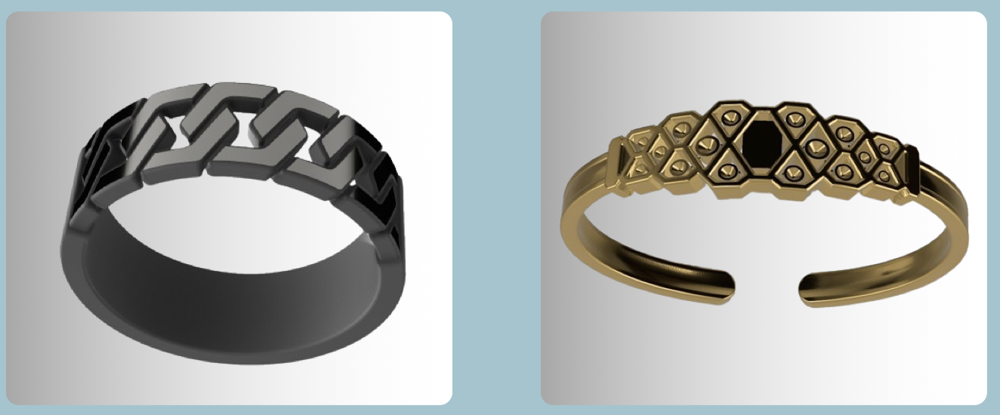

HACKATHON AT THE NATIONAL ROBOTARIUM
Position: Third 🥉

UNDERSTANDING THE CHALLENGE
Frailty, a multi-system disorder increasing vulnerability to poor recovery post-acute stressor events, poses significant hurdles in healthcare. At the Robotic Care Mashup Hackathon, our team, comprised of Elisa, Wayne, Carol, and myself, Rayane, recognized the complexities surrounding frailty management. We delved into the controversies surrounding standardized assessment approaches and the stigma enveloping frailty. Through shared experiences and insights, we understood the necessity for a solution that not only addresses physical aspects but also tackles social and emotional barriers.
CRAFTING VITAPULSE: A VISION OF INCLUSIVITY

Our journey with VitaPulse commenced with a deep dive into the lived experiences of frail individuals. Traditional fall alarm buttons, while functional, often exacerbate feelings of vulnerability and aging due to their obtrusive nature. In response, VitaPulse was conceptualized—a solution seamlessly integrating into daily life, offering discreet functionality reminiscent of jewellery. With its elegant design and customizable features, VitaPulse aims to reduce the stigma surrounding frailty and promote inclusivity. By resembling jewellery rather than medical devices, VitaPulse seeks to empower individuals to embrace their intrinsic capacities and resilience.
DRIVING IMPACT THROUGH COLLABORATION
One of the most promising aspects of VitaPulse lies in its potential to foster collaboration among healthcare professionals, caregivers, and individuals. By integrating NFC technology, VitaPulse facilitates seamless communication and data sharing, empowering stakeholders to work towards a common goal. Through meticulous cost estimation and feasibility analysis, we've laid the groundwork for VitaPulse to make a meaningful impact, not only in individual lives but also within healthcare systems.Looking ahead, we are committed to realizing the full potential of VitaPulse and transforming frailty management for the better. With continued collaboration and innovation, VitaPulse has the power to redefine perceptions, empower individuals, and foster a culture of inclusivity in healthcare.